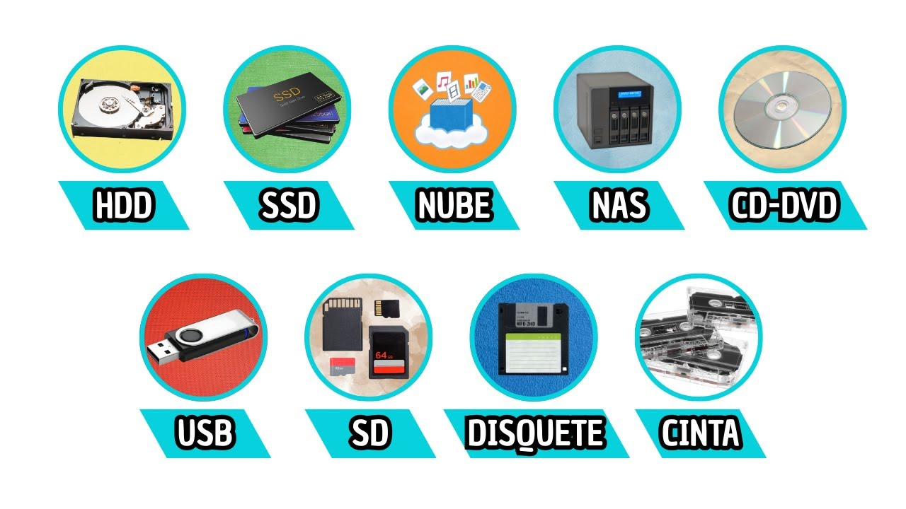

introduccion
Los dispositivos de almacenamiento son componentes que permiten guardar y conservar información digital, como documentos, fotos, videos y programas. Existen diferentes tipos, como el HDD, SSD y NVMe, que se diferencian principalmente por su velocidad, capacidad y tecnología. Estos dispositivos son fundamentales para almacenar datos de manera segura y acceder a ellos cuando sea necesario.

volver arriba¿que son los tipos de almacenamientos?
Los tipos de almacenamiento son los diferentes dispositivos o sistemas que permiten guardar información digital, como fotos, videos, documentos y programas.
volver arribaventajas
Ventajas de los tipos de almacenamiento HDD: gran capacidad y precio económico. SSD: mayor velocidad y menor consumo de energía. NVMe: velocidad muy alta y rápido acceso a los archivos. Externo: fácil de transportar y sirve para hacer copias de seguridad. Nube: permite acceder a los archivos desde distintos dispositivos y lugares.
volver arriba¿que podemos encontrar dentro de tipos de almacenamientos?
Dentro de los tipos de almacenamiento informático podemos encontrar diferentes tecnologías de hardware, soportes físicos y sistemas en red o virtuales diseñados para guardar y recuperar información digital
volver arribacomparacion entre los distintos tipos de almacenamiento
| caracteristica |
|---|
importantees importante elegir el tipo de almacenamiento adecuado, porque influye en: La velocidad de la computadora. La cantidad de información que se puede guardar. El costo del dispositivo. La seguridad y duración de los datos.
mas informacion
conclusion
los tipos de almacenamiento, como HDD, SSD y NVMe, son importantes porque permiten guardar y acceder a nuestros archivos y programas. Cada uno tiene diferentes características en cuanto a velocidad, capacidad y precio, por lo que la elección depende de las necesidades de cada usuario. Actualmente, los SSD y NVMe se destacan por su mayor velocidad y rendimiento
volver arriba